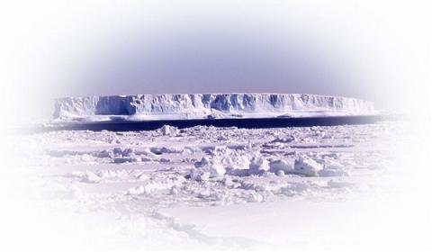
氷河のある海外や-50℃の低温室で研究をしたり
その結果をまとめて発表したり
一年を通していろいろな活動をしています。
氷河のある海外や-50℃の低温室で研究をしたり
その結果をまとめて発表したり
一年を通していろいろな活動をしています。
氷河観測
| 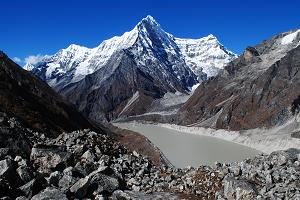 2010-10-03 ~ 11-10 ネパール トランバウ氷河 |
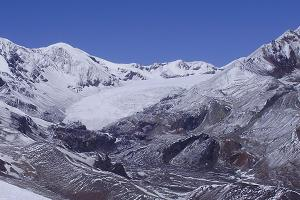 2010-04-15 ~ 05-22 ネパール リッカサンバ氷河 |
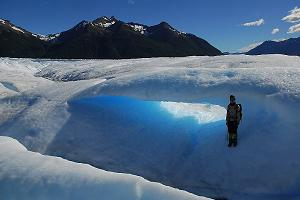 2010-02-21 ~ 03-18 パタゴニア ペリトモレノ氷河 |
| 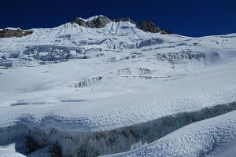 2009-10-10 ~ 11-28 ネパール ヤラ氷河 |
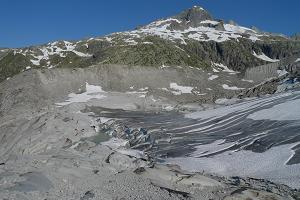 2009-06-24 ~ 09-07 スイス ローヌ氷河 |
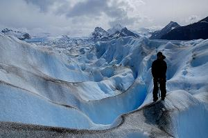 2008-12-23 ~ 01-12 パタゴニア ペリトモレノ氷河 |
2008-07-16 ~ 09-08 スイス ローヌ氷河 |
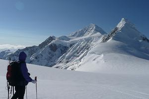 2008-05-15 ~ 06-17 アラスカ オーロラピーク |
2007-07-12 ~ 09-08 スイス ローヌ氷河 |
野外実習
| 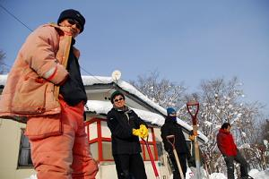 2011-01-24 ~ 01-27 雪氷学実習 (母子里) |
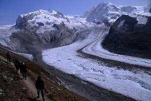 2008-08-31 ~ 09-14 南極学特別実習 (スイス) |
低温室
学会
2010-xx-xx ~ xx-xx AGU (サンフランシスコ？) |
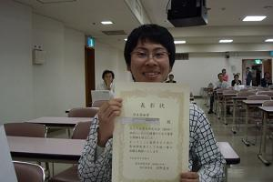 2010-09-26 ~ 09-29 日本雪氷学会 (仙台) |
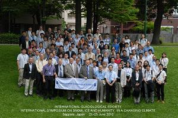 2010-06-21 ~ 06-25 IGS (札幌) |
研究室の日常 [2011年度]
| 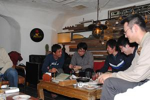 2011-04-21 新入生歓迎会 |
研究室の日常 [2010年度]
2011-03-24 2010年度 北大卒業式 |
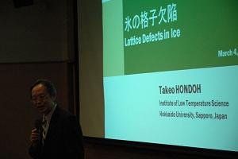 2011-03-04 本堂先生 退職記念 |
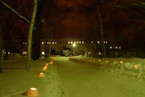 2011-01-21 スノーランタン |
| 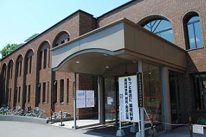 2010-06-06 北大祭 展示 |
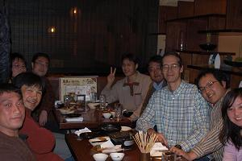 2010-04-12 新入生歓迎会 |
研究室の日常 [2009年度]
| 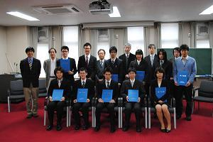 2010-03-25 2009年度 北大卒業式 |
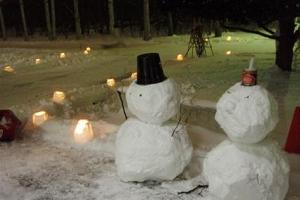 2009-12-24 スノーランタン |
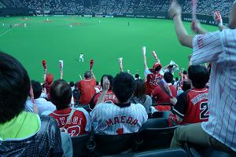 2009-06-02 広島×日ハム戦 |
| 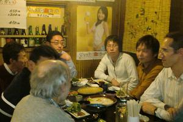 2009-04-02 セミナー＆新入生歓迎会 |